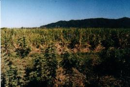

Miércoles 26 a las 21:00 La desdichada suerte que me tocó durante la visita de ese día al Monolito me ha dado buen motivo para concluir el capítulo anterior antes que hayan finalizado las actividades de la jornada. Pero hay otra razón: hasta ahora he omitido de mencionar diversas actividades nocturnas. Siendo ésta la última noche en Calilegua, comenzaré en la oscuridad. Todas las noches salvo una, luego de cenar, la agotada comitiva atacaba otro flanco ornitológico no menos importante, especialmente aquí en la Yungas: la posibilidad de ver, o al menos detectar, la presencia de lechuzas y atajacaminos. Se conoce que existen ocho o más especies de lechuzas en la zona. Y en cuanto a los atajacaminos, habitan el área diversas especies, incluyendo la más soberbia de todas las aves nocturnas: el Atajacaminos Lira, cuya larguísima cola se extiende 75 cm, tres veces más largo que el resto de su cuerpo. Noche tras noche nos abrigábamos, buscábamos las linternas, y salíamos en patota tras esta romántica y a la vez tenebrosa cacería. Nunca vimos ni oímos las aves buscadas, pero la diversión y emoción que producían estas experiencias fantasmagóricas nos permitía superar el sueño, la fatiga y el frío al menos durante una hora. La técnica utilizada para ubicar la presencia de lechuzas consiste en emitir diversas grabaciones de sus vocalizaciones. Teníamos cassettes grabados con las voces de varias especies diferentes, obtenidas tanto por integrantes del grupo como por especialistas máximos en la materia. La idea era que si la lechuza estaba en zona, seguramente iba a reaccionar a la voz grabada. La escucharíamos, y posiblemente se mostraría. Con los atajacaminos haríamos igual. Pero noche tras noche, ante la respuesta negativa que devolvía la oscuridad, el propósito ornitológico se desvirtuaba, y terminamos utilizando el telescopio para observar la luna, reconocer estrellas y constelaciones, y contar meteoritos. Otra actividad nocturna se desarrollaba en derredor del fogón. Congelados, especialmente las primeras noches, nos apostábamos alrededor del fuego, mirando persistentemente a las brazas con la esperanza que eso facilite el ingreso del magro calor a nuestros cuerpos helados y tiritantes. Alguien produjo una receta de vino dulce caliente. ¡Exquisito! Había una guitarra, y mal que mal, algunas canciones cantamos. Algunos buenos chistes animaron la conversación hasta que, uno a uno, el sueño y el frío nos terminaba venciendo. El Parque Nacional soportaba esos días una actividad nocturna inusual que perduraba toda la noche. Una inmensa topadora trabajaba sin cesar moviendo piedras en el lecho del río San Lorenzo, cerca de la desembocadura del arroyo Aguas Negras. No entendí las razones de tan faraónico movimiento de lastre, pero seguramente estaría relacionado con el nuevo puente que cruzaba el Aguas Negras, o para anticiparse a las crecidas. El asunto era que el ruido de la topadora arruinó la ansiada quietud nocturna que prometía el campamento en un sitio tan remoto. Cada vez que me despertaba oía el ronco sonido causado por el arrastre de piedra sobre piedra, sumado al rugido del motor de la máquina. Seguramente quienes acampaban cerca de la "punta" soportaban un barullo mayor aún. Este bochinche se llevó la culpa como explicación más probable de la sorprendente ausencia de todo tipo de aves nocturnas durante nuestra estadía. Una actividad nocturna, propuesta la última noche por Hernán, quedó sin realizar. La idea era volver a subir al Mirador para hacer un "vivac", es decir, pasar la noche afuera, en bolsa de dormir. Pero la sugerencia no tuvo quórum, tal vez gracias a la seguidilla de anécdotas sobre feroces y truculentos ataques de Yaguareté, que contó el mismo Hernán antes que pudiésemos aprobar su moción. Finalmente, Nico y yo organizamos nuestra propia salida "nocturna". La ultima madrugada, a eso de las 6:15 nos despertamos, nos vestimos, y nos alejamos sigilosamente del campamento, con linternas y binoculares, cuando aún era bien de noche. Queríamos subir por el arroyo Aguas Negras en la oscuridad. Nuestro propósito era tratar de avistar alguno de los tantos mamíferos que dejaban sus huellas en el arroyo. Caminamos por más de una hora entre las piedras, y en muchos lugares encontramos huellas de diversos tamaños y formas, pero no advertimos ningún animal en movimiento. Nuestro ruidoso avance, precedido por el haz de las linternas, seguramente alejaba a cualquiera de estos seres desconfiados, así que nos apostamos a esperar detrás de unas rocas. Luego de recuperar fuerzas avanzamos algo más y nos sentamos en otro descanso, pero nunca vimos los preciados mamíferos. La llegada del amanecer minimizaba toda probabilidad de observación de estos animales, cuyos hábitos son casi siempre nocturnos. Algo desilusionados, volvimos hacia el campamento. En una barranca vimos un magnífico Picaflor Cometa, pero su presencia apenas logró levantar nuestro ánimo. En una próxima oportunidad tendremos que acampar al borde del río, cerca de esas pisadas que tanto nos ilusionaron. Volvimos al campamento, y desayunamos vergonzosamente tarde, mientras intentábamos convencer a los campamentistas incrédulos que no habíamos sido los últimos en despertarnos, sino los únicos en madrugar... Mientras tanto, se acercaba la hora del desarme del campamento. Que triste ver como este lugar, que ya tenía cuerpo y alma propios, se iba desmontando, envolviendo y empacando, volviendo a quedar el terreno pelado y desierto, tal como lo habíamos visto hacía apenas cuatros días atrás. Almorzamos por última vez al aire libre en el corazón de la selva. El mediodía estaba hermoso, soleado y muy agradable, invitando a una sobremesa para esquivar la penosa tarea de empaque que teníamos por delante. Charlábamos tendidos desprolijamente sobre los bancos, relajados, disfrutando de los rayos solares entrecortados que llegaban a través de las altas ramas. Algunos de nosotros aún comíamos el postre: una naranja. De repente... ¡un grito! Instantaneamente se produjo una estampida humana. En menos de dos segundos no quedaba nadie en las mesas. Todos corríamos en una misma dirección, y a la cabeza, Germán, disparado como para ganar el premio de los 100 metros llanos. ¿Dónde está? ¿Qué es? Las indicaciones eran hacia la punta, hacia el sudeste. Siempre listo, había almorzado con los binoculares sobre la mesa, así que los traje conmigo cuando corrí. Y bien que me fueron útiles entonces... No era el único. Todos estaban con su equipo, mirando al mismo lugar del cielo. Allí, no muy alto, pero ya algo alejado, un águila. Volaba con fuertes y prolijos aleteos sobre el valle de piedras del San Lorenzo, alejándose. En esta actitud de vuelo, vista de atrás, el ave muestra poco perfil visible y las alas son meras líneas oscuras. No se delata detalle alguno que permita identificar la especie. "¡Girate!" "¡Dejame verte!" "¡Mostrate!". Con diversas interjecciones los observadores suplicaban y ordenaban al águila que realice alguna maniobra. Pero el águila astutamente continuó en fuga. Finalmente se posó en un árbol ubicado del otro lado del río, ciertamente a más de 300 metros de nuestra posición. Al hacerlo, bajó su cola, desplegándola, lo que permitió que viéramos, por un instante pero con toda claridad, una banda blanca medianamente ancha sobre un fondo casi negro. Era el único detalle visual contundente, y nos permitía descartar muchas especies, quedando en juego solamente dos candidatos: Aguila Coronada y Aguila Solitaria. Con el ave detenida cambiaron los tiempos. Mientras algunos seguían observando con sus binoculares, por si el ave giraba o tomaba vuelo nuevamente, otros buscaban el máximo acercamiento por medio del telescopio. A 15 segundos de la disparada humana, el aparato óptico, con su gran trípode, ya estaba en posición. Nunca supe quién se ocupó de buscarlo, pero ya se había organizado una cola para observar a través de esta potente lente. Sin embargo, en estos momentos únicos son los expertos quienes deben tener prioridad: todos queríamos ver de cerca al águila, pero era más importante determinar primero de cual especie se trataba. A partir de lo que veían en la imagen muy ampliada - si bien algo sufrida a causa de la gran distancia, los especialistas se debatían si se confirmaban o no la presencia de diversas características apenas discernibles, fundamentales para determinar la especie. ¿Tiene o no tiene corona? ¿El color es negro o gris oscuro? La cola de observadores detrás del telescopio nunca se achicaba. "Vamos. Miren y pasen. Cuento hasta dos. Uno. Dos. El siguiente. No toquen el ajuste. ¡Alec! ¿Oíste? No se toca. Pasen." Germán también es un excelente administrador de recursos escasos... El ave despegó, y voló a otro árbol aún más distante. Ya casi no tenía sentido estar mirando. Finalmente levantó vuelo de nuevo y desapareció. Ahora, de manera tan oportuna como había aparecido el telescopio, apareció en escena un grueso tomo de consulta que trataba sobre aves andinas. La cuidadosa comparación de los textos e ilustraciones del libro con lo que habíamos visto ayudaron a dilucidar el enigma. El veredicto final recayó sobre el Aguila Coronada, una de las más preciadas rapaces. Los observadores ya no teníamos excusa ni motivos para quedarnos en este campamento. El retorno a nuestro comedor sería para comenzar ya a juntar enseres y empacar. Pero la lección del avistaje había sido notable: cuando todos pensábamos que Calilegua ya no tenía nada más que ofrecernos, la selva nos brindó una de sus mejores joyas.  Pronto comenzó la triste peregrinación hacia el micro. Nos subimos al vehículo, nos ubicamos en nuestros lugares respectivos, y pronto el micro partía, dejando atrás pilas de recuerdos. A medida que avanzamos hacia la ruta pavimentada pude confirmar la existencia de amplios cultivos de caña de azúcar y diversos frutales, ahí nomás, a pocas cuadras del Parque Nacional.Pero aún quedaba por delante la segunda etapa de nuestro viaje: una breve visita a la bellísima Quebrada de Humahuaca, y un asalto a la puna. Partimos entonces en dirección sur por la planicie. Luego hacia el oeste, pasando la ciudad de Jujuy, y de vuelta hacia al norte. Ya transitábamos por el enorme valle del río Grande que corre encajonado en ambas márgenes por prolijas cadenas de cerros rocosos. Esta era la famosa Quebrada de Humahuaca. Avanzamos por este valle bordeado de aridez hasta llegar a Tilcara, en total, unas 4 horas de viaje. ¡Que contraste con las húmedas y frondosas montañas selváticas a que nos había acostumbrado Calilegua! Era la primera vez que recorría esta zona, y me dislumbraba el colorido de las altas montañas que demarcaban el valle. El camino iba siempre en leve ascenso por áreas totalmente desérticas, solamente vegetadas por enormes cardones que se hacían cada vez más abundantes. Finalmente llegamos a Tilcara, donde nos hospedamos en el Hotel Pucará. Luego de asignar las habitaciones, nos bañamos y salimos a recorrer la ciudad para cenar. Recuerdo las exquisitas empanaditas y el gusto tan típico del "tamal". Tan deliciosa estaba la cena, que confieso que comí en exceso. Y luego la pesadez me despertó a la noche, con la sensación que mi digestión había sido detenida totalmente. Al otro día oí que no era recomendable comer demasiado, especialmente cuando se piensa hacer una excursión a lugares altos como Abra Pampa, a 3.500 m de altura, por que uno puede terminar seriamente apunado. Y Abra Pampa era precisamente nuestro próximo destino... * * * |